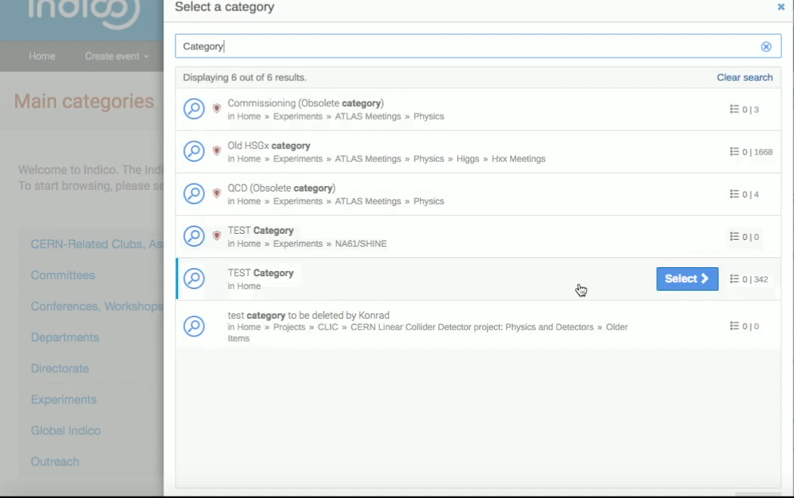
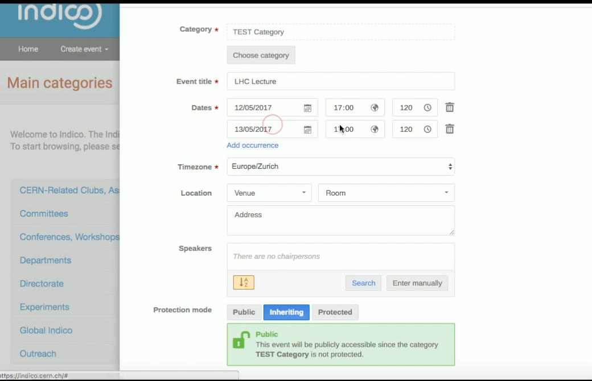
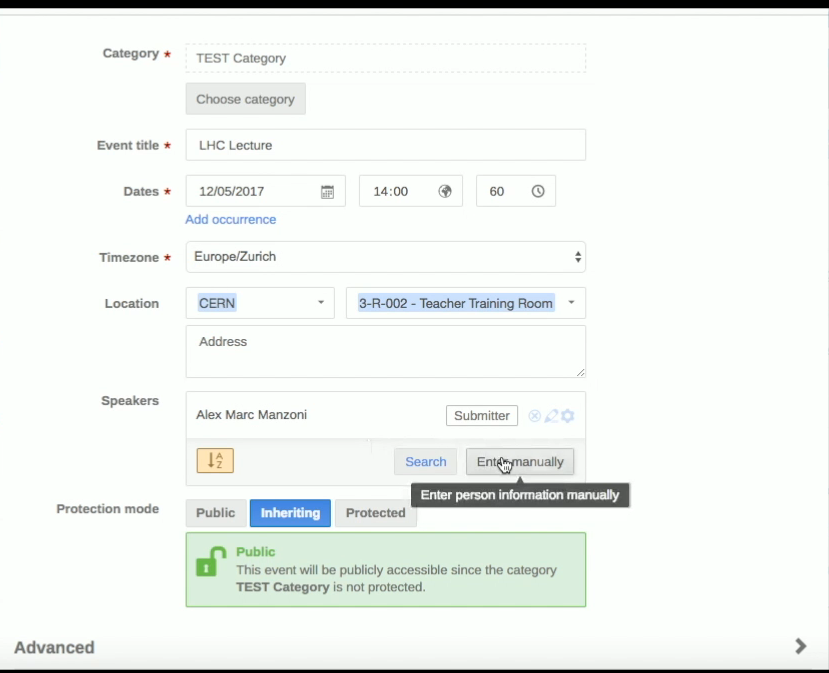

Creating a Lecture
Make sure that you are on the Indico page and that you are logged in. Click on the tab Create event, and click on Create lecture.

Click on Choose Category to select the category that you want. You can type in the one that you are looking for and click on Select once you have found it.

Then, type in the Title for your lecture and choose the Date of your event. By clicking on Add occurrence you can add more dates of the same lecture series. Do the same for the hour of the day and the duration of your event. You can learn more about event series here.

Adjust, if needed, the timezone to reflect the region your lecture takes place. You may choose the Location of your event. If you are offered a meeting rooms’ list to choose from, please remember that room reservation has to be done separately.
After having chosen the location of your lecture, you will have to select your Speakers. These may be existing users, so you find them by typing their name. Click on Search, and if the user exists, you can select his/her name and add it. Otherwise, you can manually insert users you want to include, by typing in their name and email address. The email is mandatory.
By default, all speakers are marked as Submitters, which means that they can upload their presentation to Indico themselves.

Then, you will have to select your Protection mode. By default, the protection mode is set to Inheriting, that means that you will inherit the rights from the category your Lecture belongs to. In this example figure it is Public, so that everyone can see it, but if you choose another category and you want your event to be public regardless of its category restrictions, you can make the change by clicking on Public. Otherwise, you can select Protected if you want the lecture to be visible to a selected few only, e.g. the category managers and the users you will give access to.
Once you’re finished, click on Create Event. In this page, you will be able to see the details of your lecture, and you can change them by clicking on the pencil on your right. For example, to add a description. After every change, click on Save to confirm.
Click on Switch to display view and check if all the details of your lecture are correct.
More event actions
From the event management page, click on the gear icon on the top right to see how to move, lock, delete or change the type of your event.